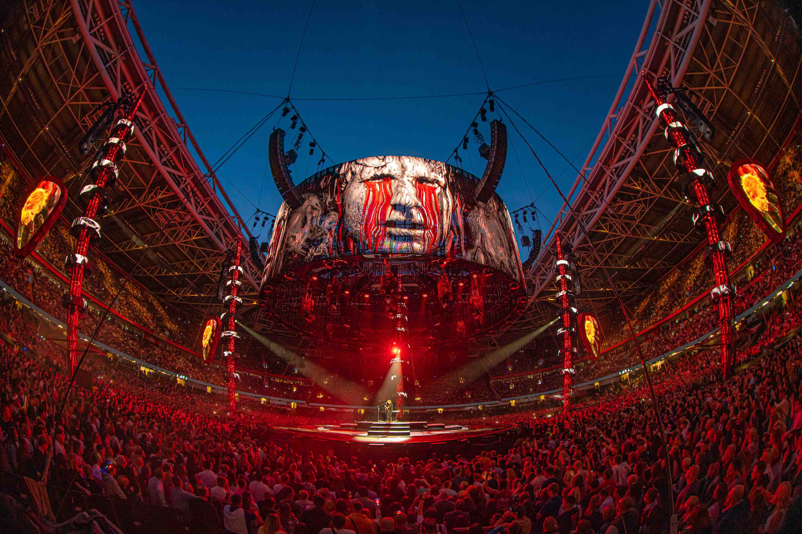

Turné, koncerty, festivaly a televizní přenosy. Dodáváme zvuk, světla a know-how tam, kde se technika staví ráno a musí fungovat večer — a druhý den o osm set kilometrů dál.
Projdeme rider, prostor a rozpočet a navrhneme systém, který show unese — včetně lidí, kteří ho postaví a odladí.